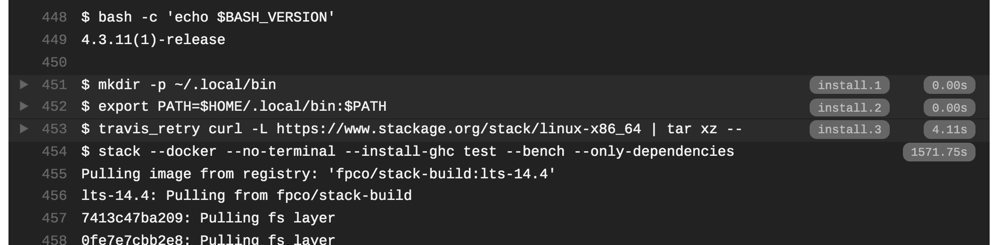
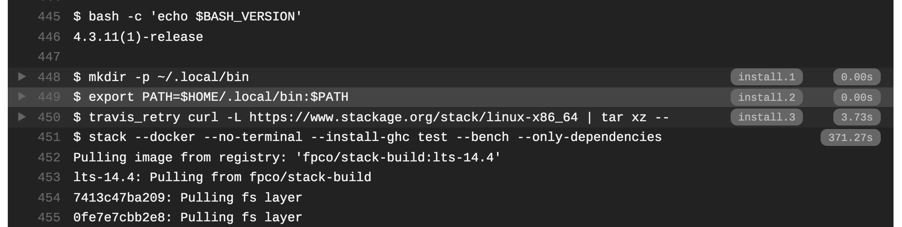

CI で Haskell Stack の Docker Integration するために
Haskell のビルドツール Stack の Docker Integration を使うことで，指定したイメージ内でホストマシンと全く同じように別の OS のバイナリをビルドできます． さらに一工夫をすることで，そのバイナリを埋め込んだ Docker Image を作ることができます(一工夫については「stack image コマンドなしに Haskell アプリの Docker イメージを作る」に書いた)
僕はこのプロセスを TravisCI で行い，master プッシュした時に latest イメージを更新してました． が，どうしても CI のビルド時間が長すぎた(1ステップ30分かかることもしばしば)ので改善しました． っていう話です．
何が遅いのか
TravisCI のログを見てみる:

1571.75s もかかってるのは依存パッケージのみをビルドしているステップだ． 現状の主原因は単純に Haskell Stack のビルドがゲキオモなせい(巷でもよく言われてる)． でもこれは初回だけで，Stack v2 からは Pantry というシステムを導入して効率よく依存パッケージを SQLite にキャッシュしている(2回目以降でキャッシュを使うのは v1 もだったが v2 からは別のプロジェクトでも共有できるようになった)． なので，TravisCI にうまくキャッシュをする設定をすることで CI 中のビルド時間は劇的に改善する:
# .travis.yml の一部
cache:
timeout: 360
directories:
- "$HOME/.stack/" # Pantry のキャッシュはココ
- "$HOME/.local/bin/" # ココには stack が入る
- ".stack-work/" # プロジェクト固有のキャッシュはココ
さて残りの 371.27s はなんと docker pull にかかってる時間だ．
fpco/stack-build
Stack の Docker Integration を利用することで指定した Docker Image 内でビルドを実行する． つまり，指定した Docker Image をプルしてくる必要がある． ログからわかるようにこの時点では fpco/stack-build という Stack の開発チームが提供している公式イメージを使っている:
Docker Hub を見てみるとわかるのだが，なんと3GBもある(Docker Hub に書いてあるのは圧縮されたサイズなので，手元での実際のサイズはなんと8.5GBもある)． もちろんローカルなら同じイメージを何度もプルすることはないので問題ないのだが，残念ながら TravisCI には Docker Image をキャッシュしない． 無理やり固めてキャッシュすることは可能だが，試してみたらそっちの方が時間がかかった(8.5GBもあるからね)．
軽いイメージを作る
なんでこんなにもあるのかは知らないけど，大きいなら小さくすれば良い． ということで自作することにした:
イメージサイズは125MB(非圧縮サイズは380MB)． とりあえず，必要そうなものだけを apt-get して，自分のプログラムがビルドできるのだけ試した:
FROM ubuntu:18.04
RUN apt-get update && apt-get install -y \
curl \
gcc \
g++ \
git \
gnupg \
libc6-dev \
libffi-dev \
libgmp-dev \
make \
netbase \
xz-utils \
zlib1g-dev \
&& apt-get clean \
&& rm -rf /var/lib/apt/lists/*
ENV STACK_VERSION="2.1.3"
RUN curl -sSL https://get.haskellstack.org/ | sh \
&& stack upgrade --binary-version=${STACK_VERSION}なので，他の人が使ってもちゃんとビルドできる保証はない． もちろん，これで CI の時間も 30s ぐらいに短縮した(キャッシュの解凍・圧縮に3分ぐらいかかっちゃうんだけど)．
ちなみに，一通りできてから気づいたのだが，ちゃんと公式にも小さいイメージができてた(半年ぐらい前からっぽい)．
圧縮サイズが390MBなので，自作の方が小さいから自分のをとりあえず困るまでは使うことにします．
Docker Integration と Resolver
Stack はビルド可能なパッケージのバージョンをまとめた Resolver を提供している． Resolver は設定ファイルで指定し，Docker Integration でイメージタグを指定しないと Resolver と同じ名前のタグを自動で利用してくれる．
# stack.yaml
resolver: lts-14.6
packages:
- .
extra-deps: []
docker:
repo: matsubara0507/stack-build
enable: falseこの場合は matsubara0507/stack-build:lts-14.6 イメージを利用する． この Resolver の更新頻度は結構高く，Resolver が出るたびに matsubara0507/stack-build のタグを増やさないといけない． 困った．
(先にネタバレをすると，docker.repo でタグまで指定すれば更新する必要は微塵もなかった)
どうやって更新するか
外のソフトウェアのバージョンアップを検知して自分の Docker Image を更新するのって結構大変なんだが，昔同じようなシチュエーションで支援プログラムを作ったのを思い出した:
こいつを改良してバージョンを追うことにした．
Dockwright
もともと利用したのはこれ:
Elchemy というプログラミング言語のバージョンを追って Dockerfile を作り直す． そのために GitHub のリリースなどをチェックして，Dockerfile の ENV を書き換えるような動作をしている． ちなみに，Docker Image の作成自体は DockerHub の自動ビルドを使っていた．
今回の要件は2つ:
ENVではなく Docker Image タグとして利用したい- GitHub ではなく Stackage の API の特定のキーの値を見たい
そのためにタグをいじるための機能を追加した(実装それ自体に面白さは特にないので割愛):
# 設定したイメージの DockarHub 上の全てのタグを取得
$ dockwright --tags
# 設定した `tags` からタグを取得し DockerHub のタグにないものを出力
# dockwright --new-tagstags の設定は次のような感じ:
# .dockwright.yaml の一部
tags:
# latest は常に
- type: value
keys:
- latest
always: true
# 前述した API の返り値 JSON の特定のキーの値
- type: refer
ref: https://www.stackage.org/download/snapshots.json
keys:
- nightly
- ltsそして次のような Makefile とシェルスクリプトを書いて更新している:
# Makefile
DOCKER_CMD = docker run --rm
IMAGE = matsubara0507/dockwright:1.1.0
BUILD_CMD = dockwright .dockwright.yaml
tags:
${DOCKER_CMD} -v `pwd`/${dir}:/work ${IMAGE} ${BUILD_CMD} --tags --with-name
new-tags:
${DOCKER_CMD} -v `pwd`/${dir}:/work ${IMAGE} ${BUILD_CMD} --new-tags --with-name
dockerfile:
${DOCKER_CMD} -v `pwd`/${dir}:/work ${IMAGE} ${BUILD_CMD}
image:
docker build -t ${tag} ${dir}
push: image
docker push ${tag}# update-image.sh
target=$1
make dockerfile dir=${target}
git status
git add -A ${target}
git diff --quiet && git diff --staged --quiet || git commit -m "[skip ci] Update ${target} image"
make -s new-tags dir=${target} | xargs -ITAG make push dir=${target} tag=TAG実際に使っているリポジトリはコレ．
おまけ: 結局どこが重い？
なんで fpco/stack-build がこんなに重いのか，調べてみた:
$ docker history fpco/stack-build:lts-14.4
IMAGE CREATED CREATED BY SIZE
9adc774bb5e5 5 weeks ago /bin/sh -c #(nop) CMD ["bash"] 0B
<missing> 5 weeks ago /bin/sh -c #(nop) ENTRYPOINT ["/usr/local/s… 0B
<missing> 5 weeks ago |11 BOOTSTRAP_COMMIT=d4143f1845f26e8e99d0a1a… 391kB
<missing> 5 weeks ago |11 BOOTSTRAP_COMMIT=d4143f1845f26e8e99d0a1a… 93.5MB
<missing> 5 weeks ago |11 BOOTSTRAP_COMMIT=d4143f1845f26e8e99d0a1a… 17B
<missing> 5 weeks ago |11 BOOTSTRAP_COMMIT=d4143f1845f26e8e99d0a1a… 8.12GB
<missing> 5 weeks ago |11 BOOTSTRAP_COMMIT=d4143f1845f26e8e99d0a1a… 239MB
<missing> 5 weeks ago /bin/sh -c #(nop) ENV LANG=C.UTF-8 LC_ALL=C… 0B
<missing> 5 weeks ago /bin/sh -c #(nop) ARG STACK_ROOT=/home/stac… 0B
<missing> 5 weeks ago /bin/sh -c #(nop) ARG VARIANT=build 0B
<missing> 5 weeks ago /bin/sh -c #(nop) ARG DEBIAN_FRONTEND=nonin… 0B
<missing> 5 weeks ago /bin/sh -c #(nop) ARG BOOTSTRAP_COMMIT=d414… 0B
<missing> 5 weeks ago /bin/sh -c #(nop) ARG LLVM_VERSION=3.9 0B
<missing> 5 weeks ago /bin/sh -c #(nop) ARG JVM_PATH=/usr/lib/jvm… 0B
<missing> 5 weeks ago /bin/sh -c #(nop) ARG CUDA_VERSION=10.0 0B
<missing> 5 weeks ago /bin/sh -c #(nop) ARG STACK_VERSION=2.1.3 0B
<missing> 5 weeks ago /bin/sh -c #(nop) ARG PID1_VERSION=0.1.2.0 0B
<missing> 5 weeks ago /bin/sh -c #(nop) ARG LTS_SLUG=lts-14.0 0B
<missing> 5 weeks ago /bin/sh -c #(nop) ARG GHC_VERSION=8.6.5 0B
<missing> 5 weeks ago /bin/sh -c #(nop) LABEL maintainer=manny@fp… 0B
<missing> 8 weeks ago /bin/sh -c #(nop) CMD ["/bin/bash"] 0B
<missing> 8 weeks ago /bin/sh -c mkdir -p /run/systemd && echo 'do… 7B
<missing> 8 weeks ago /bin/sh -c set -xe && echo '#!/bin/sh' > /… 745B
<missing> 8 weeks ago /bin/sh -c [ -z "$(apt-get indextargets)" ] 987kB
<missing> 8 weeks ago /bin/sh -c #(nop) ADD file:3ddd02d976792b6c6… 63.2MB上から6番目，--no-trunc 付けて確認してみたらココだった． そう，犯人は debian-bootstrap.sh です．
要するに，Stackage にある全てのパッケージを利用するための全ての apt-get install やらなんやらをしている． そりゃ重いわけだ．
おしまい
CI が爆速になったし，自動で Resolver の追従もしてくれるし，私は満足です． ちょこっとずつ古いプロジェクトの置き換えしている．